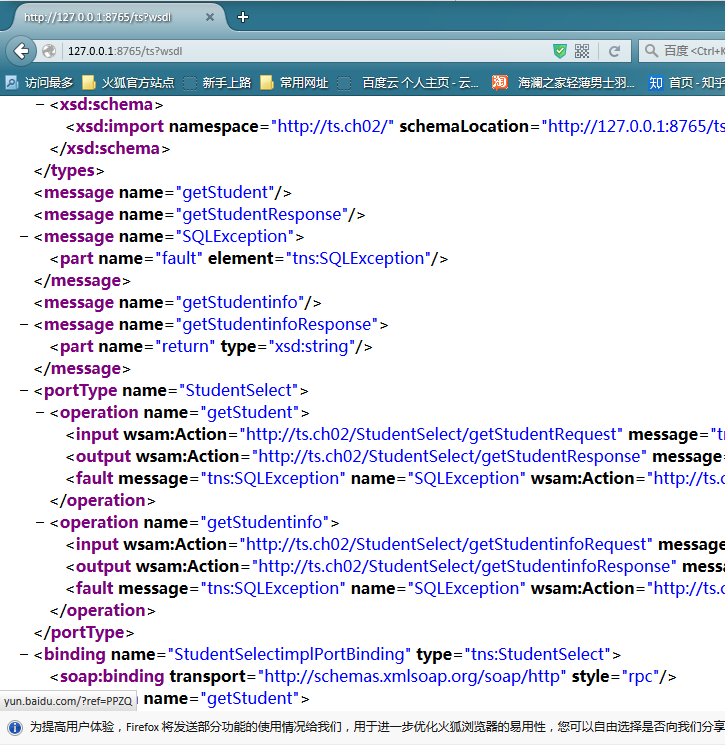

之前的文章介绍了如何写一个JAX-WS风格的webservice并发布。
本文将介绍如何在客户端调用webservice。
package ch02.ts;
import java.sql.SQLException;
import javax.jws.WebMethod;
import javax.jws.WebService;
import javax.jws.soap.SOAPBinding;
import javax.jws.soap.SOAPBinding.Style;
@WebService
@SOAPBinding(style = Style.RPC)
public interface StudentSelect {
@WebMethod
void getStudent() throws SQLException;
String getStudentinfo() throws SQLException;
}
package ch02.ts;
import java.sql.Connection;
import java.sql.SQLException;
import java.sql.Statement;
import javax.jws.WebService;
@WebService(endpointInterface = "ch02.ts.StudentSelect")
public class StudentSelectimpl implements StudentSelect {
public void getConnection() {
ConnectionToDB connectionToDB = new ConnectionToDB();
connectionToDB.getCon();
}
@Override
public void getStudent() throws SQLException {
ConnectionToDB connectionToDB = new ConnectionToDB();
String sql = "select * from studenttable where id=2013005620";
java.sql.ResultSet rs = null;
Connection connection = connectionToDB.getCon();
Statement statement = connection.createStatement();
System.out.print("数据库连接成功");
rs = statement.executeQuery(sql);
while (rs.next()) {
String id = rs.getString("id");
String gender = rs.getString("gender");
String password = rs.getString("password");
String name = rs.getString("name");
String major = rs.getString("major");
String age = rs.getString("age");
String math = rs.getString("math");
String cpp = rs.getString("cpp");
String database = rs.getString("database");
String java = rs.getString("Java");
String english = rs.getString("english");
String result = "\nthe result is:" + id + " " + gender + " " + name + " " +
password + " " + major + " " + age + " " + math + " " +
cpp + " " + database + " " + java + " " + english;
System.out.println(result);
}
}
@Override
public String getStudentinfo() throws SQLException {
ConnectionToDB connectionToDB = new ConnectionToDB();
String sql = "select * from studenttable where id=2013005620";
java.sql.ResultSet rs = null;
Connection connection = connectionToDB.getCon();
Statement statement = connection.createStatement();
System.out.print("数据库连接成功");
rs = statement.executeQuery(sql);
while (rs.next()) {
String id = rs.getString("id");
String gender = rs.getString("gender");
String password = rs.getString("password");
String name = rs.getString("name");
String major = rs.getString("major");
String age = rs.getString("age");
String math = rs.getString("math");
String cpp = rs.getString("cpp");
String database = rs.getString("database");
String java = rs.getString("Java");
String english = rs.getString("english");
String result = "\nthe result is:" + id + " " + gender + " " + name + " " +
password + " " + major + " " + age + " " + math + " " +
cpp + " " + database + " " + java + " " + english;
System.out.println(result);
return result;
}
return null;
}
}
package ch02.ts;
import javax.xml.ws.Endpoint;
public class StudentServerPublisher {
public static void main(String[] args) {
Endpoint.publish("http://127.0.0.1:8765/ts", new StudentSelectimpl());
System.out.println("已发布");
}
}
package ch02.ts;
import java.sql.Connection;
import java.sql.DriverManager;
public class ConnectionToDB {
public Connection getCon() {
try {
Class.forName("com.mysql.jdbc.Driver");
String url = "jdbc:mysql://localhost/studentmanagementsystem?useUnicode=true&characterEncoding=utf-8";
String user = "snowalker";
String password = "admin";
Connection conn = DriverManager.getConnection(url, user, password);
System.out.println("connnection success");
System.out.println(conn.getMetaData().getURL());
return conn;
} catch (Exception e) {
e.printStackTrace();
return null;
}
}
public static void main(String[] args) {
ConnectionToDB connectionToDB = new ConnectionToDB();
connectionToDB.getCon();
}
}

package ch02.ts;
import java.net.URL;
import javax.xml.namespace.QName;
import javax.xml.ws.Service;
public class Client {
public static void main(String[] args) throws Exception {
URL url = new URL("http://127.0.0.1:8765/ts?wsdl");
QName qName = new QName("http://ts.ch02/", "StudentSelectimplService");
Service service = Service.create(url, qName);
StudentSelect elf = service.getPort(StudentSelect.class);
System.out.println(elf.getStudentinfo());
System.out.println("===============");
elf.getStudent();
}
}
the result is:2013005620 女 林凌 2013005620 SE 21 99 88 99 88 99
这个只是简单的java客户端调用，之后想要实现安卓调用，继续学吧